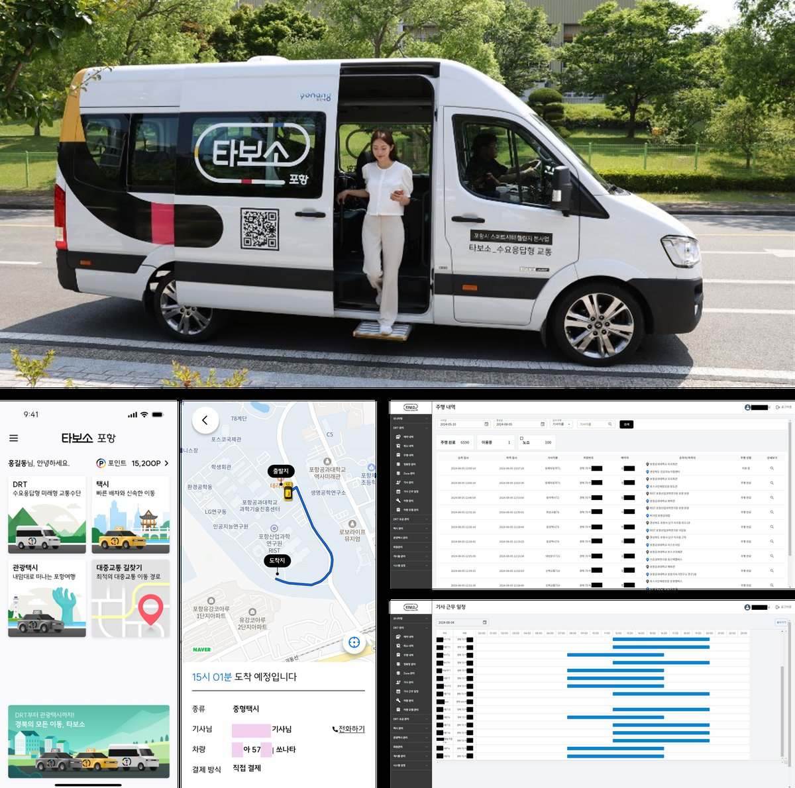
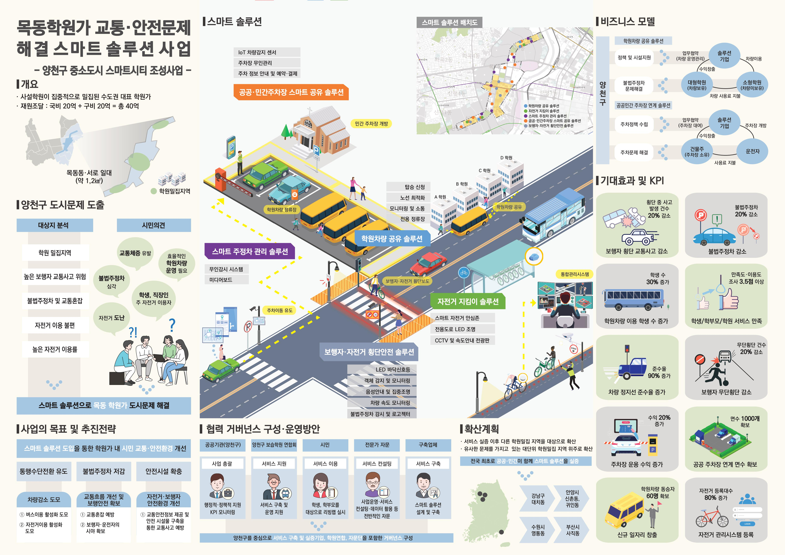
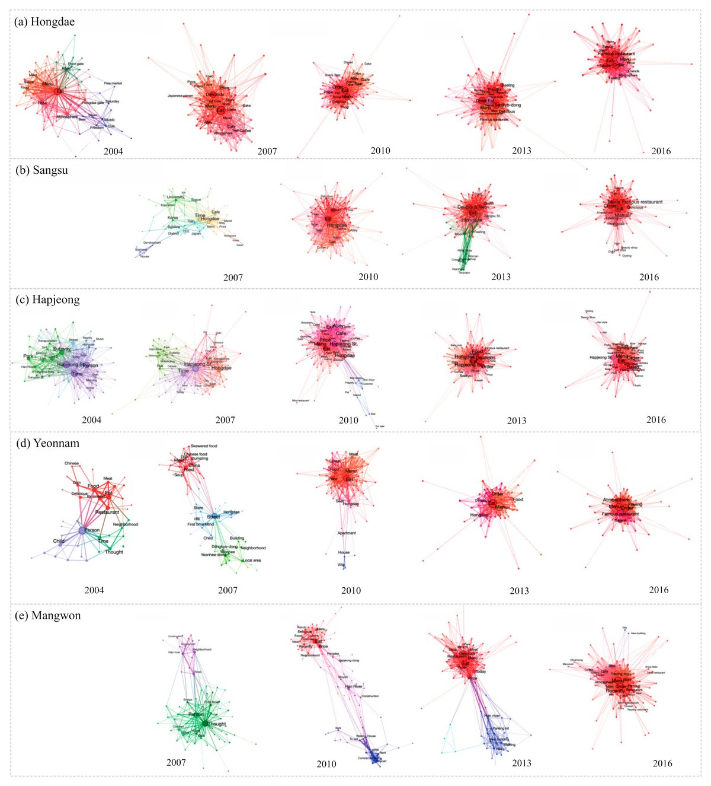

학력
| 기간 | 학교 | 전공 | 비고 |
|---|---|---|---|
| 2018.03~2020.08 | 서울대학교 환경대학원 | 환경계획학과 도시및지역계획 전공 (석사) | 우수논문상 수상 |
| 2011.03~2018.02 | 홍익대학교 | 도시공학과 (학사) | 우수졸업작품상 수상 |
경력 요약 (총 업무경력 )
| 기간 | 소속 | 직급/부서 | 핵심 역할 | 비고 |
|---|---|---|---|---|
| 2025.07~현재 (9개월) |
모빌리전트(주) | 과장 | 셔클 DRT 운영지역 관리, 모빌리티 신사업 기획 |
아우토크립트 대표 공동창업 벤처기업 아우토크립트 겸직 중 |
| 2024.07~현재 (1년 9개월) |
아우토크립트(주) | 대리, 미래모빌리티전략실 MaaS/DRT사업팀 |
스마트시티 챌린지 사업 수행, 모빌리티 플랫폼 구축/운영, 신사업 기획 |
|
| 2021.01~2023.04 (2년 4개월) |
(주)정도UIT | 연구원, 스마트시티컨설팅부 |
스마트도시계획 수립, 공공 스마트시티 공모사업 제안 및 컨설팅 |
|
| 2018.12~2020.08 (1년 8개월) |
서울대학교 환경대학원 |
연구원 | 신산업 공간/네트워크 분석 연구, 스마트산업단지 특화계획 연구 |
|
| 2017.07~2018.02 (7개월) |
홍익대학교 도시공학과 |
보조연구원 | 네트워크 분석 기반 도시 상권 연구 |
핵심 역량 키워드
| 분야 | 역량 |
|---|---|
| 모빌리티 사업수행 | DRT(수요응답형교통)/택시/콜밴 플랫폼 기획·구축·운영, 정부 공모사업 수행 및 관리 |
| 스마트시티 컨설팅 | 스마트도시계획 수립, 스마트시티 조성사업 기획/제안, 리빙랩 운영, 거버넌스 구축 |
| AI 활용(Vibe Coding) | 운행 데이터 자동 분석 및 리포트 생성 툴 개발, 모빌리티 플랫폼 PoC 데모 설계 |
| 데이터 분석 | 광역 데이터허브 구축, GIS 공간분석, 텍스트 분석, 네트워크 분석, 지역산업연관분석 |
| 사업 기획/제안 | 공공 공모사업 기획/제안, 해외 ODA 사업 기획/제안, 신사업 기획 |
| 이해관계자 관리 | 지자체 컨설팅, 중앙부처/지자체/민간기업 파트너십 구축, 운수사 관리, 시민참여 리빙랩 |
주요 프로젝트 상세
1. 아우토크립트 (2024.07~현재)
1-1. 포항 DRT·택시 플랫폼 구축 및 운영 사업 PM
- 공공 통합 모빌리티 플랫폼 '타보소' 구축: 승객앱(Android/iOS), 기사앱(Android), 관리자시스템(Web)
- DRT 서비스: 쏠라티 16대, 다이나믹라우팅 기반 배차/노선 시스템, 5개 존 운영
- 공공형 택시호출 서비스: 배차수수료 무료, 포인트/지역화폐 자동결제 연동
- 서비스 유지보수: 시스템 유지관리, 사용자(기사/승객) 교육, 장애 대응
- 계약 및 보조금 집행 관리: API 연동, 관련 용역 계약, 홍보 마케팅
- SCEWC(바르셀로나), WSCE(킨텍스) 등 국내외 전시 기획/참여
성과
앱 누적 가입자 3.2만명 ('25 기준)
택시 기사 가입 1,100명 (포항 전체 택시의 40%)
택시 호출 월 1.5만건, 지역화폐 자동결제 비율 51.5% 달성
2023 WSCE 어워즈 모빌리티 분야 수상
규제샌드박스 승인 등 제도적 성과


1-2. 경북 스마트시티 데이터허브 구축사업 PM
- NGSI-LD 표준 기반 광역 데이터허브 구축 (경상북도 전역 10개 시, 12개 군 대상)
- 8종 표준 + 17종 제안 데이터 모델 (버스, 택시 DTG, 교통카드, 유동인구 등)
- 교통분석 서비스: 대중교통 노선 분석 대시보드, 교통음영지역 DRT 도입 분석
- 교통음영지역 선정 및 노선 최적화, 유동인구 Hot Spot 분석
성과
포항시 8종 데이터셋 (유동인구, 버스/택시 DTG, 교통카드, 정류장 등) 실시간 연동
경북도 내 22개 지자체 확장 적용 가능한 멀티테넌트 구조 구축 완료
1-3. 해외 DRT 실증사업 기획 및 제안
- 라오스 교통부 및 운수사 사업 참여 합의
- 라오스 비엔티안 BRT 정류장 연계 DRT 서비스 실증 기획 (3개월 POC)
- 승객앱/기사앱/관리자시스템 현지 맞춤 개발 기획 (지도/언어 현지화)
성과
자체 DRT 솔루션의 최초 해외 실증 사업 기획
2. 모빌리전트 (2025.07~현재)
2-1. 셔클 DRT 서비스 지역 확장 및 운영관리
- 인천 검단, 제천, 영덕, 양구, 강릉 등 7개+ 지자체 셔클 DRT 운영관리
- 신규 지역 서비스 오픈: 차량 및 운행환경 점검, 시스템 세팅, 운수사/기사 교육
- 운영 중 지역 서비스 최적화: 정류장·노선·운행스케줄·운영정책 조정
- 운행 데이터 분석 기반 모니터링 및 이슈 발굴
- 지자체·운수사·플랫폼사 간 이해관계 조율 및 서비스 안정화 컨설팅
성과
서비스 지역 4개 이상 확장 (2025년 하반기~)
지역별 모니터링 리포트 자동생성 툴 구축: 핵심 지표 분석 체계 기반 운행 데이터 자동 분석 및 리포트 생성

2-2. 콜밴 플랫폼 사업 개발 및 PoC 기획
- 항공편 실시간 연동 기반 공항 이동 특화 콜밴 플랫폼 설계
- 콜밴 공급 조합 협력 기반 사업 기회 개발
- AI 다변수 매칭 엔진 기획: 수요조건(이동목적/인원/짐/시간/항공편)과 공급조건(차량유형/요금/평점/기사숙련도) 고려
성과
KPI 목표: 인천공항 실증(콜밴 50대) 일 2백콜, 고객 3천명 확보
2-3. 정부과제 및 민간사업 기획 및 제안
- 모빌리티 플랫폼 구축 관련 공공사업 제안
- 민간 모빌리티 플랫폼 구축 및 운영 제안
3. 정도UIT (2021.01~2023.04)
3-1. 지자체 공공 스마트시티 마스터플랜 수립
- 8개 분야(도시행정, 교통, 보건의료복지, 환경에너지, 방범방재, 교육, 문화여가, 근로고용) 종합 현황분석
- 10개 분야 30개 스마트도시서비스 기획
- 시민 리빙랩 4회 운영, 26개과 55개팀 공무원 부서면담 3회
- 목동신시가지 스마트인프라 가이드라인 수립
성과
경제적 파급효과: 생산유발 551.6억원, 부가가치유발 261.4억원
국토부 2022년 중소도시 스마트시티 조성 공모사업 — 서울시 자치구 중 유일 선정

3-2. 공공 스마트시티 조성 공모사업 기획 및 제안
- 학원 1,164개 밀집(양천구 59%), 불법주정차 5만건 등 데이터 기반 도시문제 정량분석
- 5대 스마트 솔루션 설계: 학원차량 공유, 자전거 지킴이, 스마트 주정차 관리, 주차장 공유, 보행자 횡단안전
- KPI 체계 수립: 일자리 창출 60명+, 자전거 사고 20% 감소, 불법주정차 단속 20% 증가 등
성과
국토부 공모 선정

3-3. LH형 스마트시티 기획 연구 수행
- LH 내외부 332개 시스템, 1,467개 데이터 목록 전수 조사 및 분류체계 수립
- 4단계 스마트도시 데이터 활용 프레임워크 설계
- 공간위계별 47개 스마트도시서비스 기획
- 서비스별 경제적 타당성 분석 (B/C, NPV, IRR)
- 전문가 평가(공공성/경제성/데이터활용성) 기반 서비스 우선순위 도출
- 이해관계자 분석 (LH/입주민/인근주민/지자체/기술업체)
- LH 데이터허브 구축 방안 제시
성과
LH 스마트도시서비스 구축 및 데이터허브 운영 전략 수립 기여

4. 서울대학교 환경대학원 (2018.12~2020.08)
4-1. (논문) 지역별 로봇산업 기반 산업 혁신 방안 연구

4-2. (프로젝트) 세종 국가 스마트산업단지 특화전략 수립 연구
- 세종시 일반·산업·입지 현황 분석 및 SWOT 분석
- 11개 주요 산업 동향 조사 (제조업/Industry 4.0, 로봇, 에너지, 자율주행, 모빌리티 등)
- 해외 스마트산단 벤치마킹 (독일 아들러스호프, 스웨덴 시스타, 미국 RTP 등)
- 행정수도(워싱턴D.C., 캔버라, 온타리오) 산업구조 비교분석
- 스마트산단 특화전략: 스마트팩토리, 스마트로지스틱스, 스마트모빌리티, 친환경에너지 등
- 충청권 산업경쟁력 분석 및 특화산업 선정
성과
연구 보고서 납품 완료, 세종 국가산업단지 조성 방향 수립 기여
5. 홍익대학교 학부연구실 (2017.07~2018.02)
5-1. (논문) 텍스트 네트워크 분석 기반 도시 상권 변화 연구

자격증 및 어학
| 구분 | 내용 | 취득일 |
|---|---|---|
| 자격증 | 도시계획기사 | 2020.09 |
| 어학 | IELTS 7.5 (General) | 2023.12(만료) |
| 어학 | OPIc IH | 2024.02(만료) |
| 어학 | TOEIC 960 | 2020.05(만료) |
수상
| 수상명 | 논문/프로젝트명 | 일시 |
|---|---|---|
| 우수발표상 | A Network Approach to Revealing Dynamic Succession ... | 2020.11 |
| 우수논문상 | 스마트 전문화를 통한 수도권과 비수도권의 산업 혁신 방안 연구 ... | 2020.02 |
학술 논문
- 김한길, 이영성 (2021). "수도권과 비수도권 로봇산업의 경제적 파급효과 분석: 스마트 전문화의 관점에서", 국토계획, 대한국토도시계획학회
- Lee, M., Kim, H., & Cheon, S. (2021). "A Network Approach to Revealing Dynamic Succession Processes of Urban Land Use and User Experience", Sustainability, 13, 11955 (SCIE)
기술 스택
해외 경험
| 기간 | 내용 |
|---|---|
| 2023.07~2024.01 | 호주 시드니 워킹홀리데이 (어학연수) |
| 2015.09~2016.02 | 캄보디아 국제자원활동 (KB국민은행/한국YMCA 주관) |